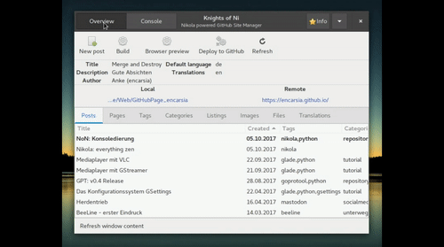
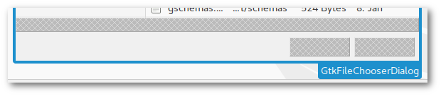

NoN: Konsoledierung
Knights of Ni - jetzt wird's schick
Einmal eingerichtet, benötigt man für das Befeuern einer Nikola-angetriebenen Seite nur einen Dateimanager, einen Editor, ein Terminal und normalerweise zwei Kommandos.
Und weil ich es gern bequem habe, habe ich mir etwas Unterstützung dafür gebastelt.
Was bisher geschah
Die per Button aufgerufenen Nikola-Kommandos wurden bisher folgendermaßen verarbeitet:
nikola buildlief im Hintergrund als subprocess.run(cmd)
nikola github_deploywurde im separaten Terminalfenster ausgeführt; dieses wurde nach der erfolgreichen Ausführung wieder geschlossen
Und das soll jetzt alles vorbei sein?
Neu ist immer besser.
—Barney Stinson
Die Oberfläche ist nun per Gtk.Stack zweigeteilt. Per Gtk.StackSwitcher in der Headerbar lässt sich zwischen der normalen Oberfläche und einem Terminal hin- und herwechseln.
Dies hat mehrere Eigenschaften und Vorteile:

Das Teminal öffnet sich im aktuellen Verzeichnis der Nikola-Instanz.
Das Terminal kann beliebig verwendet werden.
Beim
exitwird es nur resettet.
buildundgithub_deploywerden in diesem Terminal ausgeführt, wenn sie über die Oberfläche (Buttons) gestartet werden.Beim Ausführen über die Buttons wechselt der Focus auf das Terminal und nach Beenden des Tasks wieder zurück zur Oberfläche. Mit super Überblende (aktivierte Animationen erforderlich)!
Optisch aufgeräumter, da kein separates Fenster mehr benötigt wird.
Media player with VLC
Contents
Creating a media player with LibVLC
VLC is not just a multimedia player but also a framework with Python bindings available. In this example app a simple media player will be set up via LibVLC (see also the GStreamer mediaplayer article).
LibVLC
The installation of the VLC Python bindings are mandatory. The package is coomonly found under the name python-vlc.
Glade
display area of the media file: Gtk.DrawingArea widget
control elements: skip for-/backward (Gtk.Button), pause/resume playback (Gtk.Togglebutton)
select media: buttons to show video or image file
manipulate playback: buttons to mute and rotate video
Python
Set up player
The VLC player is initiated when the corresponding widget (Gtk.DrawingArea) is drawn. The realize is required for that task. This signal in general is available for the widget class.
vlcOptions = "--no-xlib" win_id = widget.get_window().get_xid() setup_player(vlcOptions) vlcInstance = vlc.Instance(options) player = vlcInstance.media_player_new() player.set_xwindow(win_id)
Given options can be regular VLC commandline options. In the example app a click on the "rotate" button turns the video 180 degrees. Therefore the player must be initiated again with the option --video-filter=transform{type=180} given.
Media playback
Just like the GStreamer player VLC is capable of showing various video, audio and image formats.
player.set_mrl(file_url) #start playback player.play() #pause/resume playback player.pause()
Position scale
The implementation of the progress bar using a slide control is pretty simple.
#retrieve position player.get_position() #define positition player.set_position(val)
Possible values are float numbers between 0 and 1. These functions are quite resource demanding resulting into stuttering playback. In this example the get_position is avoided by retrieving the slider position instead of the video.
Possibilities and limitations
Working with LibVLC Python bindings is easy and intuitive in contrast to GStreamer. In addition the "headerbar problem" is non-existent.
On the other hand it is not quite minimalistic to resort to a huge and indepentant project. You will have to install VLC and Python bindings instead of just importing the GStreamer module from the GObject Introspection repository.
The overall consumption of resources is bigger.
Media player with GStreamer
Contents
Creating a media player with GStreamer 1.x
GStreamer is a multimedia framework that can be used ti show (de)code and otherwise alter media files.

Glade
display area of the media file: Gtk.DrawingArea widget
control elements: skip for-/backward (Gtk.Button), pause/resume playback (Gtk.Togglebutton)
select media: buttons to show video or image file
Python
Set up player
Elements and pipelines
GStreamer manages all kinds of media data streams. Every step in the procession chain is defined as an element connected to pipelines. A common pipeline consists of "source", "filter"/"decode" and "sink" elements.
------------------------------------------------------ | pipeline | | | | ------------- ---------------- -------------- | | | source | | filter | | sink | | | | |->>| decoder |->>| | | | | input | | processing | | output | | | ------------- ---------------- -------------- | ------------------------------------------------------
This is done by the Gst module:
#init Gst and create pipeline Gst.init() pipeline = Gst.Pipeline() #create elements src = Gst.ElementFactory.make("filesrc","source") decode = Gst.ElementFactory.make("decodebin","decode") sink = Gst.ElementFactory.make("xvimagesink") #configure elements src.set_property("location",file_location) #add elements to pipeline pipeline.add(src) pipeline.add(decode) pipeline.add(sink) #link elements together src.link(decode) decode.link(sink)
Predefined pipelines
There are plenty of possibilities such like handling audio and video signals separated from each other by assigning a "videosink" and an "audiosink" and so on. On the other hand there are given pipelines for standard tasks like media playback. In this case there can be made use of the "playbin" element which also significantly reduces the code:
Gst.init(None) player = Gst.ElementFactory.make("playbin","player") sink = Gst.ElementFactory.make("xvimagesink") player.set_property("uri",uri_of_file) player.set_property("video-sink", sink)
And action!
A pipeline or playbin element can now be controled by Gst.STATE: .. code-block:: python
player.set_state(Gst.State.PLAYING) player.set_state(Gst.State.PAUSED)
Progress bar
The video progress in this example will not be visualized by a Gtk.ProgressBar but by a horizontal Gtk.Scale. This widget allows to manually set a position with the mouse instead of just showing a value using the value-changed signal. Strictly speaking the change-value signal is a much cleaner solution here which will be used in the follow-up article on relizing the media player with LibVLC.
Possibilities and limitations
Getting to know how to utilize GStreamer there appear a bunch of obstacles (read as: the incompetent author of this article tend to widely generalize based on her experiences):
There are plenty of tutorials but two circumstances make them difficult to comply with:
The primary language in GStreamer is C. Good luck with your Python stuff.
Many older tutorials and manuals do not work out of the box because of major version leap of both GStreamer (0.10 to 1.x) and Python (2.x auf 3.x).
In addition there are effects that are hard to understand. The example given in this article does not work if the Gtk window contains a headerbar. In theory this should be solved by using the "gtksink" but I haven't figured out yet how to assign that sink to a specific widget.
GPT: v0.4 Release
JFTR: GoProTool v0.4 release
Some minor changes/fixes for the project. Recent development status is available as a (pre-)release: Release v0.4 "scarlatina".
NEW:
import files from any directory (and not just from detected SD cards) with corresponding button added to the toolbar
FIXED:
folder selection on import
progress status on video import
"FIXED":
headerbar removed from the media preview version because no images on playback
Note
This issue will probably be fixed by switching to LibVLC instead of GStreamer, see also LibVLC tutorial article.

The GSettings configuration storage system
Contents
Manage application settings with GNOME's GSettings
GSettings is the central application configuration system of the GNOME desktop. Settings are stored in binary form so you will need to use a low-level configuration tool which provides a backend for GSettings. This can be either have a graphical (dconf-editor) or commandline interface (gsettings).
In this article's example background images will be read, set and bookmarked.

Schemas
An initial configuration for an application is defined in a schema file. This XML formatted text file then will be transformed into its machine readable equivalent.
This is an example for a schema file with one property (key):
<schemalist> <schema id="org.gtk.Test" path="/org/gtk/Test/"> <key name="string-key" type="s"> <default>""</default> <summary>A string</summary> <description> Configuration key defined for a string. Default value is set to an empty string. </description> </key> </schema> </schemalist>
The nomenclature for the file is "schema.id.gschema.xml".
The standard installation directory for schema files is /usr/share/glib-2.0/schemas. Schema files can also be stored outside of this folder (p.e. local, for testing purposes) but these will not be shown by dconf-editor.
Now the schema files must be compiled
glib-compile-schemas /path/to/schema/files/ #default directory glib-compile-schemas /usr/share/glib-2.0/schemas/
The compiled file which is now used by GSettings is named gschemas.compiled.
Glade
For displaying image files the GtkImage widget is required. All controls of the example app are placed in the headerbar:
"Open File" button: opens FileChooserDialog
switch: turns desktop icons on or off
"Fav" togglebutton: bookmarks file drawn in the image widget, shows whether image file is bookmarked as favourite
"Set as wallpaper" button: use file as background image
MenuButton: list of bookmarked files
Python
Load global schema
Load an existing configuration:
setting = Gio.Settings.new("full.schema.path") #load desktop background configuration setting = Gio.Settings.new("org.gnome.desktop.background")
Load local schema
If the schema file is not stored in the standard directory the location of the schemas.compiled file must be given first:
schema_source = Gio.SettingsSchemaSource.new_from_directory(os.getcwd(), Gio.SettingsSchemaSource.get_default(), False) schema = Gio.SettingsSchemaSource.lookup(schema_source,"org.example.wallpaper-changer",False) setting = Gio.Settings.new_full(schema, None, None)
Bind widget
It is possible to directly bind GSettings properties to a widget. Property statuses then can be displayed or manipulated:
setting.bind("setting-key", widget, property, Gio.SettingsBindFlags...)
In the example app this is done with the switch widget:
self.bg_setting.bind("show-desktop-icons", self.obj("switch"), "active", Gio.SettingsBindFlags.DEFAULT)
The switch shows the current configuration status on application startup. Changes on the switch control button are applied instantly.
Get and set values
Property settings can be retrieved and defined by get_"type" and set_"type". The relevant function to use is dependent on the key type, use get_string and set_string for strings, get_int and set_int for interger and so on (see PyGObject API Reference).
A property value request via get_value(key) returnes a value of type GLib.Variant.
Therefore the set_value(key) function also requires this datatype.
Value contents can be converted into simple datatypes:
#return string setting.get_value(key).get_string() #return anything (list, string, bool etc.) setting.get_value(key).unpack()
and vice versa:
setting.set_value(key, GLib.Variant(string_type, value)
The GNOME developer documentation provides a list of avaliable string types.
In the example app this is used to update the bookmark list:
app_setting.set_value("favourites", GLib.Variant('as',fav_list))
Listings
Schema
org.example.wallpaper-changer.gschema.xml (Source)
<?xml version="1.0" encoding="utf-8"?> <schemalist> <schema path="/org/example/wallpaper-changer/" id="org.example.wallpaper-changer"> <key name="favourites" type="as"> <default>[]</default> <summary>List of favourite wallpapers</summary> <description> Add or remove entry by pressing the 'fav' toggle button. </description> </key> </schema> </schemalist>
Glade
<?xml version="1.0" encoding="UTF-8"?> <!-- Generated with glade 3.20.0 --> <interface> <requires lib="gtk+" version="3.20"/> <object class="GtkFileFilter" id="filefilter"> <mime-types> <mime-type>image/*</mime-type> </mime-types> </object> <object class="GtkImage" id="image1"> <property name="visible">True</property> <property name="can_focus">False</property> <property name="icon_name">emblem-favorite</property> </object> <object class="GtkMenu" id="menu"> <property name="visible">True</property> <property name="can_focus">False</property> </object> <object class="GtkApplicationWindow" id="window"> <property name="can_focus">False</property> <signal name="destroy" handler="on_window_destroy" swapped="no"/> <signal name="size-allocate" handler="on_window_size_allocate" swapped="no"/> <child> <object class="GtkImage" id="image_area"> <property name="width_request">400</property> <property name="height_request">300</property> <property name="visible">True</property> <property name="can_focus">False</property> <property name="stock">gtk-missing-image</property> </object> </child> <child type="titlebar"> <object class="GtkHeaderBar"> <property name="visible">True</property> <property name="can_focus">False</property> <property name="title">Wallpaper changer</property> <property name="has_subtitle">False</property> <property name="show_close_button">True</property> <child> <object class="GtkButton" id="open_button"> <property name="label" translatable="yes">Open file...</property> <property name="visible">True</property> <property name="can_focus">True</property> <property name="receives_default">True</property> <signal name="clicked" handler="on_open_button_clicked" swapped="no"/> </object> </child> <child> <object class="GtkBox"> <property name="visible">True</property> <property name="can_focus">False</property> <property name="orientation">vertical</property> <child> <object class="GtkLabel"> <property name="visible">True</property> <property name="can_focus">False</property> <property name="label" translatable="yes">Desktop icons</property> </object> <packing> <property name="expand">False</property> <property name="fill">True</property> <property name="position">0</property> </packing> </child> <child> <object class="GtkSwitch" id="switch"> <property name="visible">True</property> <property name="can_focus">True</property> </object> <packing> <property name="expand">False</property> <property name="fill">True</property> <property name="position">1</property> </packing> </child> </object> <packing> <property name="position">2</property> </packing> </child> <child> <object class="GtkMenuButton" id="fav_menu"> <property name="visible">True</property> <property name="can_focus">True</property> <property name="receives_default">True</property> <property name="popup">menu</property> <child> <placeholder/> </child> </object> <packing> <property name="pack_type">end</property> <property name="position">1</property> </packing> </child> <child> <object class="GtkButton" id="setwp_button"> <property name="label" translatable="yes">Set as wallpaper</property> <property name="visible">True</property> <property name="can_focus">True</property> <property name="receives_default">True</property> <signal name="clicked" handler="on_setwp_button_clicked" swapped="no"/> </object> <packing> <property name="pack_type">end</property> <property name="position">3</property> </packing> </child> <child> <object class="GtkToggleButton" id="fav_button"> <property name="visible">True</property> <property name="can_focus">True</property> <property name="receives_default">True</property> <property name="image">image1</property> <property name="always_show_image">True</property> <signal name="toggled" handler="on_fav_button_toggled" swapped="no"/> </object> <packing> <property name="pack_type">end</property> <property name="position">3</property> </packing> </child> </object> </child> </object> <object class="GtkImage" id="preview"> <property name="width_request">200</property> <property name="visible">True</property> <property name="can_focus">False</property> <property name="margin_right">5</property> </object> <object class="GtkFileChooserDialog" id="filechooser_dialog"> <property name="width_request">800</property> <property name="height_request">600</property> <property name="can_focus">False</property> <property name="type_hint">dialog</property> <property name="transient_for">window</property> <property name="attached_to">window</property> <property name="filter">filefilter</property> <property name="preview_widget">preview</property> <property name="use_preview_label">False</property> <signal name="delete-event" handler="on_dialog_close" swapped="no"/> <signal name="file-activated" handler="on_filechooser_dialog_file_activated" swapped="no"/> <signal name="response" handler="on_filechooser_dialog_response" swapped="no"/> <signal name="update-preview" handler="on_filechooser_dialog_update_preview" swapped="no"/> <child internal-child="vbox"> <object class="GtkBox" id="fcbox"> <property name="can_focus">False</property> <property name="orientation">vertical</property> <child internal-child="action_area"> <object class="GtkButtonBox"> <property name="can_focus">False</property> <child> <placeholder/> </child> </object> <packing> <property name="expand">False</property> <property name="fill">False</property> <property name="position">0</property> </packing> </child> </object> </child> <child type="titlebar"> <object class="GtkHeaderBar"> <property name="visible">True</property> <property name="can_focus">False</property> <property name="title">Choose image file</property> <property name="show_close_button">True</property> </object> </child> </object> </interface>
Python
#!/usr/bin/python # -*- coding: utf-8 -*- import os import sys import gi gi.require_version("Gtk", "3.0") from gi.repository import Gtk, Gio, GLib, GdkPixbuf class Handler: def on_window_destroy(self, window): window.close() def on_dialog_close(self,widget, *event): widget.hide_on_delete() return True def on_filechooser_dialog_response(self, widget, response): if response == 1: self.on_dialog_close(widget) elif response == 0: app.uri = widget.get_filename() app.draw_pixbuf(app.uri) app.handle_fav(app.uri) self.on_dialog_close(widget) def on_filechooser_dialog_file_activated(self, widget): self.on_filechooser_dialog_response(widget, 0) def on_open_button_clicked(self, widget): app.obj("filechooser_dialog").show_all() def on_setwp_button_clicked(self, widget): app.bg_setting.set_string("picture-uri", "file://{}".format(app.uri)) def on_window_size_allocate(self, widget, size): app.draw_pixbuf(app.uri) def on_filechooser_dialog_update_preview(self, widget): if widget.get_filename() != None and os.path.isfile(widget.get_filename()): pixbuf = GdkPixbuf.Pixbuf.new_from_file_at_scale(widget.get_filename(),200, 200, True) app.obj("preview").set_from_pixbuf(pixbuf) def on_fav_button_toggled(self,widget): if widget.get_active(): #add file to fav_list if not in list if app.uri not in app.fav_list: app.fav_list.append(app.uri) else: #remove file from fav_list if in list if app.uri in app.fav_list: app.fav_list.remove(app.uri) #update GSettings entry for favourites app.app_setting.set_value("favourites", GLib.Variant("as", app.fav_list)) #update fav list in popup menu popup = app.obj("menu") #remove all items for i in popup.get_children(): popup.remove(i) #reload all items from fav_list for fav in app.fav_list: #only label menuitem with filename instead of path item = Gtk.MenuItem(os.path.split(fav)[1]) item.connect("activate", self.on_choose_fav_from_menu, fav) popup.append(item) popup.show_all() def on_choose_fav_from_menu(self, widget, filename): app.uri = filename app.draw_pixbuf(filename) app.handle_fav(filename) class ExampleApp: def __init__(self): self.app = Gtk.Application.new("org.application.test", Gio.ApplicationFlags(0)) self.app.connect("activate", self.on_app_activate) self.app.connect("shutdown", self.on_app_shutdown) def on_app_activate(self, app): builder = Gtk.Builder() builder.add_from_file("17_gsettings.glade") builder.connect_signals(Handler()) self.obj = builder.get_object #load existing GSettings application config self.bg_setting = Gio.Settings.new("org.gnome.desktop.background") #get_value returns Gio formatted file path file = self.bg_setting.get_value("picture-uri") #convert path into string self.uri = file.get_string()[7:] #bind GSettings key to GTK+ object self.bg_setting.bind("show-desktop-icons", self.obj("switch"), "active", Gio.SettingsBindFlags.DEFAULT) #add GSettings schema from compiled XML file located in current directory (only recommended for test use, standard location: /usr/share/glib-2.0/schemas/) schema_source = Gio.SettingsSchemaSource.new_from_directory(os.getcwd(), Gio.SettingsSchemaSource.get_default(), False) schema = Gio.SettingsSchemaSource.lookup(schema_source,"org.example.wallpaper-changer", False) self.app_setting = Gio.Settings.new_full(schema, None, None) #convert value (GLib.Variant) into native list self.fav_list = self.app_setting.get_value("favourites").unpack() self.obj("window").set_application(app) self.obj("window").show_all() self.draw_pixbuf(self.uri) self.handle_fav(self.uri) def draw_pixbuf(self,file): size=self.obj("image_area").get_allocation() pixbuf = GdkPixbuf.Pixbuf.new_from_file_at_scale(file, size.width, size.height, True) self.obj("image_area").set_from_pixbuf(pixbuf) def handle_fav(self,uri): #set toggle button to correct state if uri in self.fav_list: self.obj("fav_button").set_active(True) else: self.obj("fav_button").set_active(False) def on_app_shutdown(self, app): self.app.quit() def run(self, argv): self.app.run(argv) app = ExampleApp() app.run(sys.argv)
Herdentrieb
Mastodon - get hype
Warnung
Dieser Beitrag wird bedarfs- und kapazitätsabhängig aktualisiert. Da sich Mastodon in massiver, aktiver Entwicklung befindet, können Teile des Inhaltes veraltet sein.
Inhalt
Was bisher geschah
Mastodon ist ein freies, verteiltes soziales Netzwerk und gleichzeitig der Name dessen Server-Komponente. Ein Mastodon-Server innhalb des gesamten Netzwerkes (Fediverse) ist eine Instanz. Die Nutzung lehnt sich im Wesentlichen an Twitter an: ein Post (Toot, dt. Tröt) enthält bis zu 500 Zeichen, die wiederum favorisiert und erneut geteilt (Boost) werden können, es gibt das Follower-Prinzip und diverse Timelines (Nutzer, lokal, öffentlich).
Was passiert gerade?
Ein junges, Open-Source-Netzwerk zieht naturgemäß primär technikaffines Volk an, gefolgt von den üblichen Early Adopter-Kandidaten. Das führt derzeit in eine inhaltliche Mischung aus Tech-Themen, darunter viel, was sich um Mastodon selbst dreht, Rollenspiele, Manga, Furries, NSFW-Content und lahme SJW-Ansprachen.
Wer bis jetzt noch nicht abgeschreckt ist, fragt sich:
Welche Instanz ist die richtige für mich?
Da prinzipbedingt jeder einen Mastodon-Server betreiben kann, tun dies auch viele. So explodiert aktuell die Zahl der Instanzen. Aber es ist eben auch damit zu rechnen, dass die Mehrheit nur kurzfristig aus Experimentierfreude existieren wird. Verschwindet eine Instanz, verschwinden auch alle Accounts (und deren Inhalte) in dieser.
Ein weiterer Punkt ist die Ausrichtung der Instanz, sei sie themenbezogen (Spaß/Memes/Aktivismus/Tech) oder lokal/landessprachlich oder der Grad an Moderation.
Hier zeichnet sich gerade eine Art Sortierungsbewegung ab: Benutzer migrieren zu Instanzen, die eher ihren Interessen bzw. ihrem Umfeld entsprechen.

Bisher ist es nicht möglich, die lokale Timeline einer Instanz ohne Registrierung anzusehen und man hier nahezu die Katze im Sack kauft. Jüngst gibt es aber Abhilfe unter

{kind=link}
{kind=link}
Wenn man also nicht genau eine Instanz favorisiert, weil sie thematisch passt oder man dort schon Nutzer kennt, sucht man sich am besten eine größere, allgemeine Instanz aus, bei der eine größere Chance besteht, die erste Euphoriewelle zu überleben.
Okay, ich bin dabei, was muss ich tun?
Hashtags
Tags sind die (aktuell) beste Art, bei Mastodon nach Stichwörtern zu suchen. Entweder sucht man direkt in der Suchleiste in der linken Spalte oder man ruft die URL <instance>/tags/<tag> auf. In den Suchergebnissen werden auch Beiträge anderer Instanzen angezeigt, dies erfolgt aber nicht kongruent, man vergleiche beispielsweise den Tag #bicycle auf
User-Feed
Für jeden Nutzer wird ein Atom-Feed bereitgestellt. Leider gibt es dies nicht für Tags.
Klingt irgendwie nicht nach dem großen Twitter-Killer
Korrekt, ist es möglicherweise auch nicht. Man merkt dem Projekt definitiv an, dass es noch in den Kinderschuhen steckt. Es ist recht aufwändig, sich nach Inhalten und Usern umzusehen.
Das erinnert mich ein wenig an den "Facebook-Killer" Google+, als soziales Netzwerk hat es seine Nische gefunden, aber gerade große Medien, Blogger und die egomane Twitter-"Elite" haben die Funktionsweise von G+ nie verstanden (und wollten das auch größtenteils nicht). Damit will ich die Versäumnisse und das akkurate und stete Verschlimmbessern der Plattform seitens Google in keiner Weise in Schutz nehmen.
BeeLine - first impressions
Navigation compass

BeeLine in use showing directions and distance
BeeLine in the broader sense is a route guidance system for bicycles. Instead of navigating a given route the concept of BeeLine is to show only the destination or waypoint direction (like a compass needle) and its distance. If the device is not connected to the phone the needle actually points to north. The user is completely free in choosing the route:
BeeLine is built for everyday adventuring. After all, where’s the fun in being told exactly what to do? Take back control of your ride and explore your city with BeeLine.
Tech stuff
BeeLine
The intern battery is supposed to last at least 30 hours of usage. The E-Ink display is weather resistant, energy saving and readable at sunlight, with a shiftable LED for riding the dark. The device has four touch buttons to access some functionalities, everything else is done via app.
App

App: Select destination
After logging into the BeeLine account and pairing the device via Bluetooth you are ready to start. Choose "Where to?" and point on a destination on the map. Then press the yellow "BeeLine" button. Another option is choosing a destination ("Destinations") which can be saved and retrieved again. Destinations with additional waypoints can be saved as route.
The app also possesses the BeeLine compass view so it ia also possible to navigate without the dedicated device.

App: Compass view
Bike
The device is mounted to the various parts of the bicycle by the rubber band being part of the BeeLine case. The orientation can be turned by 90° by the app so mount points could be the handlebar, stem or top tube.

BeeLine mounted to stem
The mounting using the rubber band appears quite flexible, stable and trustworthy.
Are we there yet?
BeeLine now points to the destination, the shown distance just being linear distance or, well...beeline.

App: current location and destination
Watching the compass needle pointing the destination actually piqued my curiosity to shorten my ride. That didn't work out for me on the first try but at least I know now this exists in Berlin Treptow:

Unicorn street
The navigation is ended via app and not by reaching the destination. The ride is saved.

App: saved routes
Room for improvement
Waypoints
It is possible to switch between waypoints but it is not obvious which one is currently displayed. Also it seems waypoints can be scrolled through forward. (need to figure out more on this)
Accidentally finishing ride
This happened to me twice now. The ride was ended and the route wasn't saved. This possibly is more than just a handling error. (need to figure out more on this)
Handling
There are four touch buttons on the device but the functions bound to the buttons are not apparent.
Import routes
The app is able to save routes so it might be feasable to also import routes. A killer feature for me was an alternatve navigation mode guiding by given routes. That would make the BeeLine a good looking Garmin replacement, a Swiss navi knife.
Pros and Cons
Pro |
Contra |
|---|---|
easy mounting |
material fatigue of the rubber of the mounting case, spare parts shall be available in the future |
long lasting battery |
does not work without app |
minimalistic navigation |
minimalistic navigation |
pleasant design |
value for money (115 Euro) |
legible display |
|
not distracting while riding |
|
explore new ways |
File chooser dialog
Contents
FileChooserDialog
The GtkFileChooserDialog is a subclass of GtkDialog (see diaogue article) and provides opening and saving of files and folders.

Glade
The dialog can be added from the "Toplevel" section of the widget sidebar. In addition to the file browser itself the widget has an intern GtkBox for additional widgets and a GtkButtonBox as "action area" for buttons.
First the Gtk.FileChooserAction mode must be defined (see Python GI API Reference): open or save file, choose or create a folder.
Action area and Responses
The response signal is emitted on widget interaction in the action area which also passes the response value. So for these widgets there is no need to activate the clicked signal of buttons.
By default the "action area" is generated beneath the file browser area.
{kind=link}
If the FileChooserDialog is used without Glade (see below) the buttons are created in the headerbar. This seems to be standard procedure because Glade generated dialogs induce the warning
Gtk-WARNING **: Content added to the action area of a dialog using header bars
This message is not shown if buttons are not added to the intern action area.
If a headerbar with buttons is created in Glade the buttons cannot be assigned to a response value.
There may be several solutions to the problem:
XML file
After creating a headerbar with button(s) the Glade file is opened in a text editor and add line(s) to the <action-widgets> element:
<object class="GtkFileChooserDialog" id="filechooser_dialog"> <property ... ></property> <property ... ></property> <!-- ... --> <action-widgets> <!-- Buttons innerhalb der action area --> <action-widget response="0">button1</action-widget> <action-widget response="1">button2</action-widget> <!-- Button in Headerbar --> <action-widget response="-1">hb_button</action-widget> </action-widgets> <!-- ... --> </object>
This works but this procedure is surely not the intended way to deal with the problem because after altering the Glade file the edit is retracted.
add_action_widget function
The add_action_widget adds activatable widgets to the action area and hold a response value. This includes widgets of the Gtk.Activatable class: Buttons, MenuItem, RecentChooserMenu, Switch and ToolItem.
The scheme for creating a button is
widget.add_action_widget(button,response)
The widget property "can-default" of the button must be activated:
button.set_property("can-default",True)
In the example the standard buttons "apply/cancel" are added to the file dialog:
button = Gtk.Button.new_from_stock(Gtk.STOCK_CANCEL) button.set_property("can-default",True) self.obj("filechooser_dialog").add_action_widget(button, Gtk.ResponseType.CANCEL) button = Gtk.Button.new_from_stock(Gtk.STOCK_APPLY) button.set_property("can-default",True) self.obj("filechooser_dialog").add_action_widget(button, Gtk.ResponseType.OK)
To apply file selection on doubleclick the file-activated is also required in addition to the response signal.
Preview widget
The dialogue can contain an optional preview widget. To use it activate "Preview Widget Active" and choose a free widget (p.e. a GtkImage). It may be necessary to create the preview widget in an empty container widget and pull it into a free area.
If the preview requires a refresh the update-preview signal is emitted.
FileFilter
Files can be filtered according to certain criteria by using FileFilter. There can be defined several (shell style glob) patterns or MIME-types for each filter.
In Glade filters can be found in the widget sidebar in the "Miscellaneous" group. A filter for a dialog can be selected in the general widget properties. This corresponds to the set_filter function.
Python
Dialog without Glade
The FileChooserDialog is a complex but also easy to use graphic interface item. Realizing the dialog without Glade also avoids the headerbar problem discussed above. Creating a dialog follows the scheme
dialog = Gtk.FileChooserDialog("window title", parent_window, file_chooser_action, (button1,response1, button2,response2))
The dialog then can be directly run and processed:
response = dialog.run() if response == response1: ... elif response == response2: ... dialog.destroy()
FileFilter
There are two possibilities to apply a FileFilter:
No user choice. The applied filter is preset:
dialog.set_filter(filter)
Selection per dropdown menu. The user can choose between different defined filters:
dialog.add_filter(filter1) dialog.add_filter(filter2) ...
Desktop integration
Contents
Desktop integration: icon, headerbar, commndline options
(Continuation if the GtkApplication article)

Glade
Icon
To assign an icon to an window just select "General Appearance > Icon File". Problematic here is that Glade only shows image files located in the same folder as the Glade file even if an image from another folder is chosen.
A simple solution is editing the Glade file in a text editor and add the relative path to the icon. This edit is preserved even when changing and saving the file with Glade again:
<object class="GtkApplicationWindow" id="window"> ... <!-- <property name="icon">duckyou.svg</property> --> <property name="icon">../files/duckyou.svg</property> ...
Headerbar
Headerbars were introduced in GNOME 3.10 and unite titlebar and toolbar. Besides title and subtitle there is room for widgets such as buttons or menus and client side window controls.
A headerbar is optional. To make use of it "General > Appearance > Client side window decorations" has to be activated if not set yet. This prepares a reserved container area in the upper window area to add the headerbar widget in. If a headerbar is placed out of this specific area a regular titlebar is generated in addition to the headerbar.

Commandline options
GtkApplication provides functions to define individual commandline options of the applications (Handling command line options in GApplication).
Create Options
Options are added by the add_main_option_entries(entrylist) function. The entries must be GLib.OptionEntry formatted which requires a bunch of parameters.
def __init__(self): self.app = Gtk.Application.new("org.application.test", Gio.ApplicationFlags(0)) self.app.add_main_option_entries([ self.create_option_entry("--version", description="Show version numbers and exit"), self.create_option_entry("--setlabel", description="Set label widget", arg=GLib.OptionArg.STRING,), self.create_option_entry("--bollocks", description="Additional test option - exit"), ]) def create_option_entry(self, long_name, short_name=None, flags=0, arg=GLib.OptionArg.NONE, arg_data=None, description=None, arg_description=None): option = GLib.OptionEntry() option.long_name = long_name.lstrip('-') option.short_name = 0 if not short_name else ord(short_name.lstrip('-')) option.flags = flags option.arg = arg option.arg_data = arg_data option.description = description option.arg_description = arg_description return option
Short names
An option can have a one character synonym ("a printable ASCII character different from ‘-‘" to be precise), the short name. Lokking at the option --help this commonly is -h.
The short_name variable of OptionEntry ist surprisingly integer. The not very obvious solution here is to pass the character's decimal code, p.e. 97 for "a". An error message will be thrown when trying to pass invalid numbers. Options without a short code get a value of 0.
Connect signal
The "handle-local-options" signal of Gtk.Application handles commandline options. If the signal is connected the signal is emitted before the "startup" signal.
self.app.connect("handle-local-options", self.on_local_option)
Processing options
The option will be passed as an element of the GLib.VariantDict class which can be searched for by calling contains("option"):
def on_local_option(self, app, option): if option.contains("option1"): #do something and exit normally return 0 elif option.contains("option2"): #do something different and exit return 0 elif option.contains("option3"): #do more and continue return -1
A string can be extracted by calling end() which converts GLib.VariantDict to a GLib.Variant element. That GLib.Variant then can be culled by calling keys():
var = GLib.VariantDict.end(option) option_string = var[var.keys()[0]]
The handler function demands a return value that corresponds to the exit status:
-1: application execution will be continued
0: execution successful, application will be quit, "startup/activate" will not be emitted
1 or positive value: execution was not successful, application will be quit
Run application with options
The option --help is always available and lists all defined options of the application and their descriptions.
The options of the example file now can be executed:
$ python script.py --version Python: 3.6.0 GTK+: 3.22.6
or pass a string to the application's Gtk.Label:
$ python script.py --setlabel "I can haz options!"
Stand-alone
Contents
Run program as GtkApplication
GtkApplication handles different important aspects of a GTK+ application like GTK+ initialization, session management and desktop integration.

XML files
Glade
Glade is used as usual, main windows should be Gtk.ApplicationWindows. As example the file from the dialogue article is reused.
Python
Initialize GtkApplication
The initialization process requires the parameters application_id and flags. Flags can normally set to 0 being the same as FLAGS_NONE (see Gio.ApplicationFlags), naming conventions for application_id are listed here.
The application can be connected to different signals being emitted on preassigned events. It is mandatory to at least define an activate signal:
def __init__(self): self.app = Gtk.Application.new("org.application.test", 0) #self.app.connect("startup", self.on_app_startup) #optional self.app.connect("activate", self.on_app_activate) #self.app.connect("shutdown", self.on_app_shutdown) #optional def on_app_activate(self, app): #setting up GtkBuilder etc. ... ... ...
Start and quit
GtkApplication takes over the handling of the GTK+ mainloop so there is no need of starting and quitting GTK+ manually and run() and quit() called instead:
Gtk.main() -> app.run(argv) Gtk.main_quit() -> app.quit()
If the application is quit by the [X] button or the "Quit" appmenu entry the "shutdown" signal is emitted (see above) and the program is terminated. That means there is no need to define these signals like in previous examples using GtkWindow. The "shutdown" also works even if the signal is not explicitly connected to a function during the initialization process.